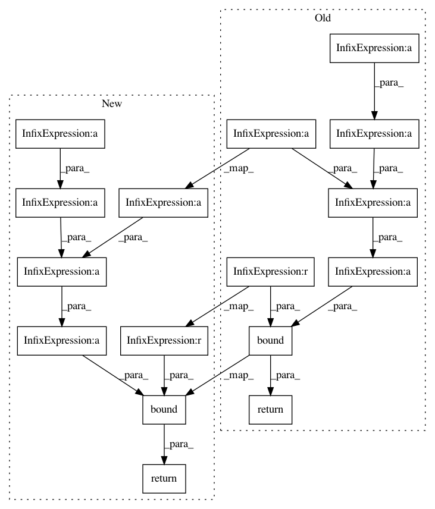

4d77268c95b8a041a3bac848860765afdad1af46,pymc3/distributions/discrete.py,BetaBin,logp,#BetaBin#Any#,111
Before Change
def logp(self, value):
alpha = self.alpha
beta = self.beta
return bound(binomln(self.n, value)
+ betaln(value + alpha, self.n - value + beta)
- betaln(alpha, beta),
value >= 0, value <= self.n,
alpha > 0, beta > 0)
class Bernoulli(Discrete):
Bernoulli log-likelihood
After Change
beta = self.beta
n = self.n
return bound(gammaln(alpha + beta) - gammaln(alpha) - gammaln(beta) +
gammaln(n + 1) - gammaln(value + 1) - gammaln(n - value + 1) +
gammaln(alpha + value) + gammaln(n + beta - value) - gammaln(beta + alpha + n),
0 <= value, value <= n,
alpha > 0,
beta > 0)
class Bernoulli(Discrete):
Bernoulli log-likelihood
In pattern: SUPERPATTERN
Frequency: 3
Non-data size: 16
Instances
Project Name: pymc-devs/pymc3
Commit Name: 4d77268c95b8a041a3bac848860765afdad1af46
Time: 2015-12-23
Author: chris.fonnesbeck@vanderbilt.edu
File Name: pymc3/distributions/discrete.py
Class Name: BetaBin
Method Name: logp
Project Name: pymc-devs/pymc3
Commit Name: 459a1ca35c12ed8da7f5684f52180c6d22d41492
Time: 2015-12-23
Author: superbobry@gmail.com
File Name: pymc3/distributions/discrete.py
Class Name: BetaBin
Method Name: logp
Project Name: pymc-devs/pymc3
Commit Name: 7ba3ea351aff34e26302b942a715a626e7823f22
Time: 2015-12-25
Author: superbobry@gmail.com
File Name: pymc3/distributions/discrete.py
Class Name: BetaBin
Method Name: logp